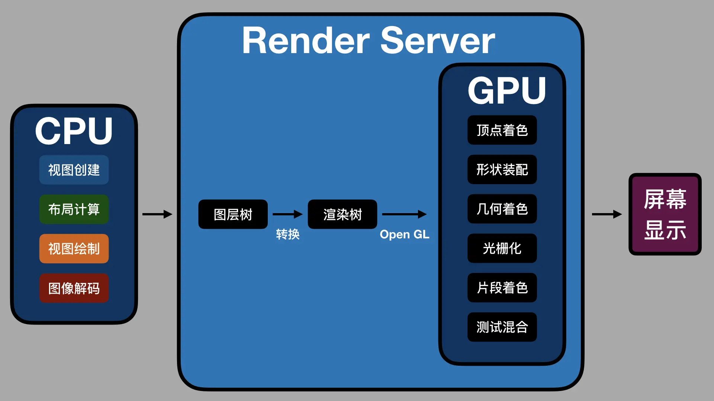

iOS 渲染流程
2022年2月9日
原生界面更新渲染的流程，可以分为以下四步。
- 第一步，更新视图树，同步更新图层树。
- 第二步，
CPU计算要显示的内容，包括视图创建（设置Layer的属性）、布局计算、视图绘制（创建Layer的Backing Image）、图像解码转换。当runloop在BeforeWaiting和Exit时，会通知注册的监听，然后对图层打包，打完包后，将打包数据发送给一个独立负责渲染的进程Render Server。 - 第三步，数据到达
Render Server后会被反序列化，得到图层树，按照图层树中图层顺序、RGBA值、图层frame过滤图层中被遮挡的部分，过滤后将图层树转成渲染树，渲染树的信息会转给OpenGL ES/Metal。前面CPU所处理的这些事情统称为Commit Transaction。 - 第四步，
Render Server会调用GPU，GPU开始进行前面提到的顶点着色器、形状装配、几何着色器、光栅化、片段着色器、测试与混合六个阶段。完成这六个阶段的工作后，再将CPU和GPU计算后的数据显示在屏幕的每个像素点上。
整个渲染过程，如下图所示：

如上图所示，CPU 处理完渲染内容会输入到 Render Server 中，经图层树和渲染树的转换，通过 OpenGL 接口提供给 GPU，GPU 处理完后在屏幕上显示。渲染过程中 Commit Trasaction 的布局计算会重载视图 LayoutSubviews 方法，以及执行 addSubview 方法来添加视图。视图绘制会重载视图的 drawRect 方法。这几个方法都是 iOS 开发中常用的。
移动视图位置、删除视图、隐藏或显示视图、调用 setNeedsDisplay 或 setNeedsDisplayInRect 方法，都会触发界面更新，执行渲染流程。